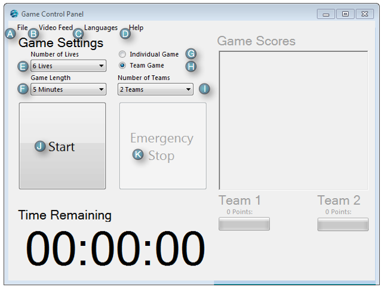

Description of Controls

Game Welcome Screen
- A-File Menu Option:
- The File Menu allows users to:
- B-Video Feed Option:
- The Video Feed Menu allows users to view the live video feed from either: (Requires Version 1.2 or greater)
- C-Language Option:
- The Languages Menu allows users to change the language to:
- English


(Requires Version 1.2 or greater)
- D-Help Menu Option:
- The File Menu allows users to:
- E-Number of Lives:
- This drop down allows the attraction host to specify the number of lives available for each player.
- F-Game Length:
- This allows the attraction host to specify the length of the game.
- G-Individual Game:
- This allows the attraction host to specify an individual game.
- H-Team Game:
- This allows the attraction host to specify a team game.
- I-Number of Teams:
- This allows the attraction host to specify the number of teams. This control will only be visible if the team game control is selected.
- J-Start/Resume Game:
- This button will start or resume the gameplay.
- K-Emergency Stop/Reset:
- This button will stop an active the gameplay in the event of an emergency. If the game has already been stopped this button can also be used to reset the game. The text of the button will change to indicate if the button will stop or reset the game.